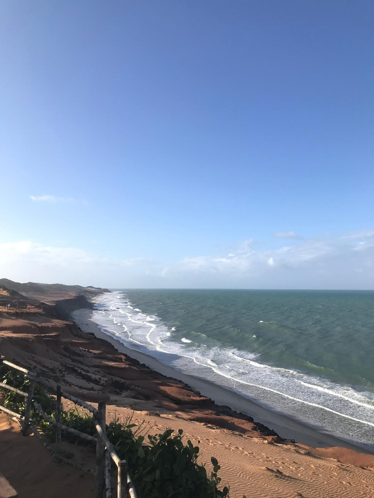
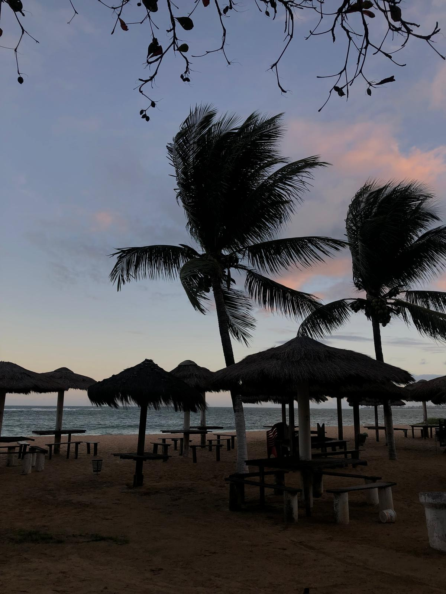
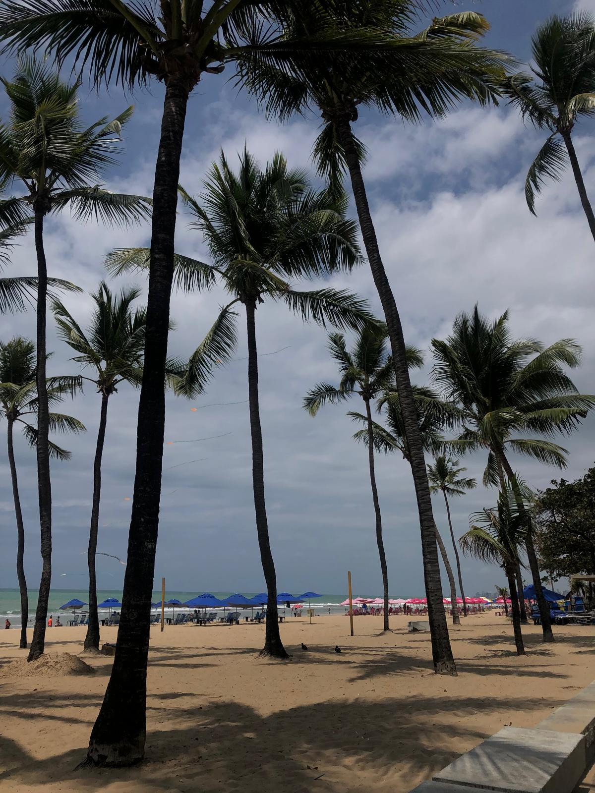
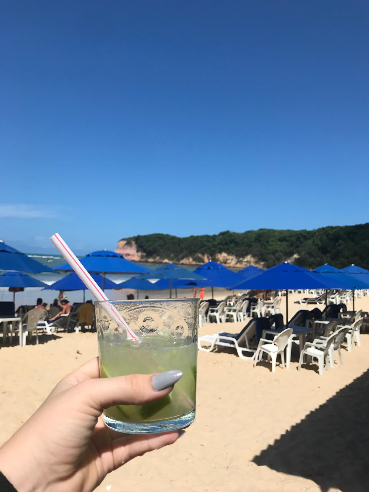
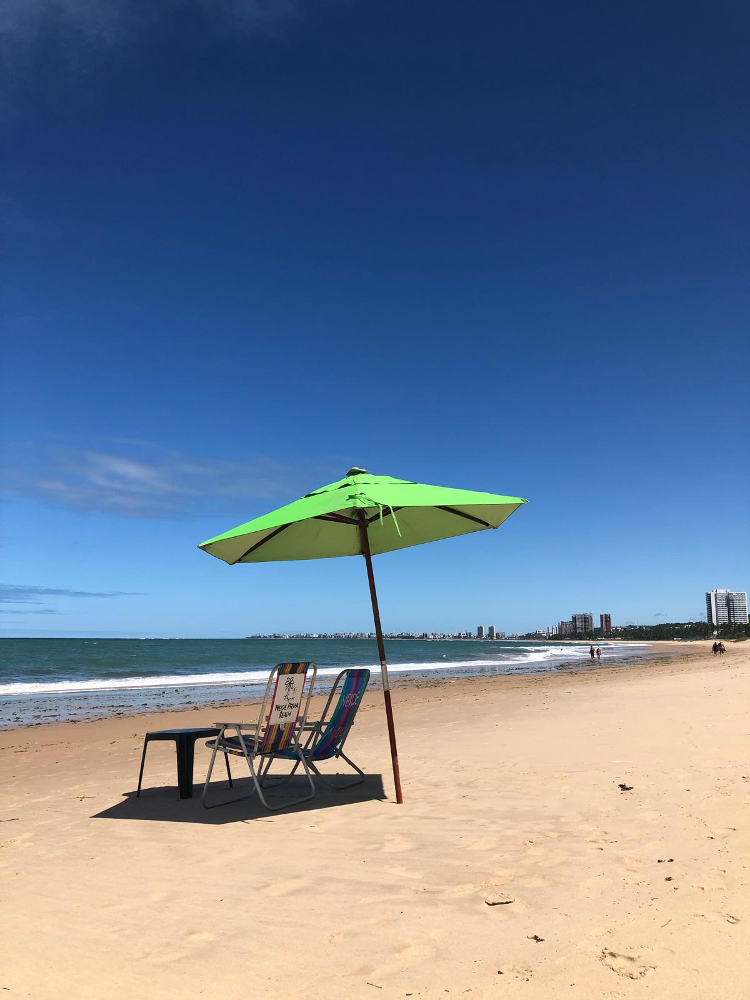
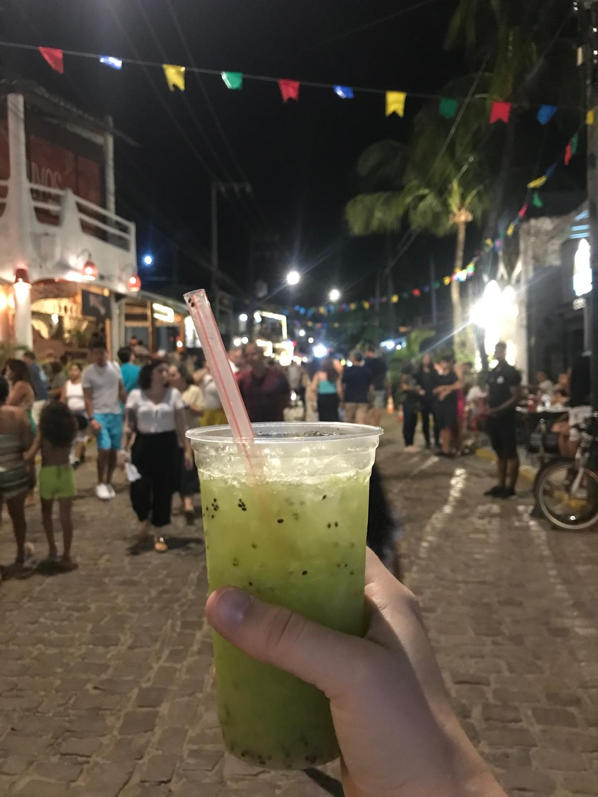

So many places to go!
The Northeast Region of Brazil is one of the five regions of the country. Brazil has twenty-six states, nine of them are in the northeast part: Maranhão, Piauí, Ceará, Rio Grande do Norte, Paraíba, Pernambuco, Alagoas, Sergipe and Bahia.
Scroll down to see some pictures!





